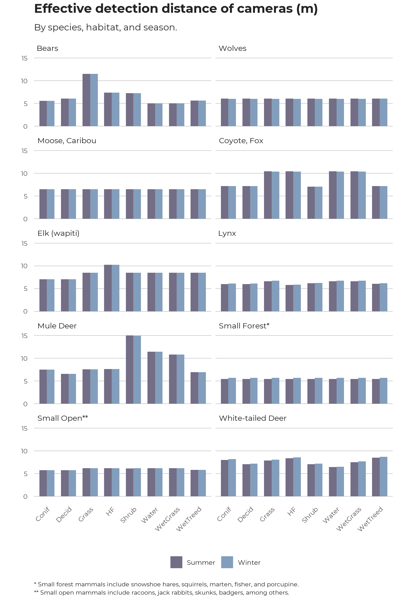

One option to define the area surveyed by cameras is to define a fixed maximum distance, using a pole or other marker at 5m or 10m or whatever is appropriate. Animals beyond that distance are not counted. The assumption, which should be tested, is that all target species are detected if they are within that distance. The downside of this simple approach is that it excludes data from animals detected in the potentially long tail of greater distances where they are partially detectable.
The ABMI uses all images (unlimited distance), with a procedure to estimate the effective detection distance of cameras. “Effective detection distance” is the fixed distance that would give the same number of detections as observed if all animals up to that distance were perfectly detectable and none were detectable further away. This approach is used for any point counts or transects with unlimited distances or with distance bands beyond the distance of perfect detectability. In the ABMI protocol, we place a prominently coloured pole 5m from the camera. All native mammals are recorded as being closer than the pole or farther than the pole, with additional categories for animals that are uncertain (near 5m but not directly in line with the pole), investigating the pole, or investigating the camera. Simple geometry gives the effective detection distance from the proportion of locations that are <5m away versus >5m (excluding the uncertain and investigating images):
\[EDD~(m) = \frac{5}{sqrt(1-p_{>5m})}\] where p is the proportion of images with the species greater than 5-m away.
The area surveyed by a camera is:
\[Surveyed~Area~(m^2)~=~\frac{(π~*~EDD^2~*~angle)}{360}\]
where angle is the angle of the camera’s field-of-view in degrees (42° for the Reconyx cameras that the ABMI uses).
Detection distances are expected to differ for different species, by habitat types and possibly by season (e.g., on snowpacks versus in summer shrubs). We therefore used the results to develop detection-distance models for eleven species groups and eight broad habitat types: deciduous forest, upland conifer forest, upland grass, shrub, lowland forest, wet grass, water and human footprint. BIC-based model selection examined seven models with those habitat types grouped into broader categories, and seven more that added a factor for season (winter = October 15 – April 14, summer = April 15 – October 14).
Below we plot the estimated EDD for different species groups for each of the eight broad habitat types and two seasons.
